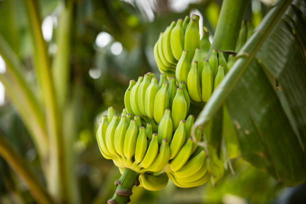

Tulsi (Holy Basil) 🌿
🌱 Easy Steps to Grow Tulsi at Home
1.Choose the Right Pot & Soil 🏺
-Use a medium-sized pot (8-12 inches deep) with drainage holes.
-Use well-draining, organic-rich soil.
2.Planting Tulsi Seeds or Cuttings 🌱
-Sow seeds ¼ inch deep in soil and lightly water.
-For cuttings, take a 4-6 inch stem and plant it in moist soil.
3.Sunlight & Temperature ☀️🌡️
-Needs 5-6 hours of sunlight daily.
-Thrives in warm temperatures (20-35°C).
4.Watering Schedule 💧
-Water every 2-3 days (avoid overwatering).
-Keep soil moist but not soggy.
5.Pruning & Maintenance ✂️
-Trim regularly to encourage bushy growth.
-Remove flowers to prolong leaf production.
🛡️ Preventive Measures
-Avoid overwatering to prevent fungal infections and root rot.
-Keep the plant in sunlight to prevent pests like aphids and whiteflies.
-Use neem oil spray to protect against common pests.
-Ensure proper air circulation around the plant to avoid mold and mildew.
-Prune regularly to encourage fresh and healthy growth.
🌟 Benefits of Tulsi
✅ Boosts Immunity & Fights Infections.
✅ Reduces Stress & Promotes Mental Clarity.
✅ Aids Digestion & Relieves Respiratory Issues.
✅ Natural Antioxidant & Detoxifier.
✅ Used in Ayurvedic Medicine for Healing.
Lemongrass 🌱
🌱 Easy Steps to Grow Lemongrass at Home
1.Choose the Right Pot & Soil 🏺
-Use a deep pot (12-15 inches) for strong roots.
-Prefers loamy, well-draining soil.
2.Planting Lemongrass 🌿
-Can be grown from stalks: Place a fresh stalk in water until roots appear, then plant in soil.
-Plant 1 inch deep and water well.
3.Sunlight & Temperature ☀️🌡️
-Needs full sun (6-8 hours daily).
-Thrives in warm climates (25-35°C).
4.Watering Schedule 💧
-Water regularly to keep soil moist.
-Avoid overwatering to prevent root rot.
5.Harvesting & Maintenance ✂️
-Harvest leaves when they are 12 inches tall.
-Trim older leaves to promote new growth.
🌾 Nutritional Requirements
-Needs nitrogen-rich organic compost for healthy growth.
-Phosphorus supports root development and plant strength.
-Potassium enhances disease resistance and overall growth.
-Use liquid fertilizers like compost tea or seaweed extract for added nutrition.
🛡️ Preventive Measures
-Ensure good drainage to prevent root rot.
-Prune dry and dead leaves to keep the plant healthy.
-Use neem oil spray to prevent common pests like aphids and spider mites.
-Keep the plant in a sunny, well-ventilated area to avoid fungal infections.
-Avoid overcrowding by spacing plants properly to improve air circulation.
🌟 Benefits of Lemongrass
✅ Used in Herbal Teas & Cooking.
✅ Aids Digestion & Reduces Bloating.
✅ Has Anti-Inflammatory & Antibacterial Properties.
✅ Acts as a Natural Mosquito Repellent.
✅ Helps in Detoxifying the Body.

Rosemary 🌿
🌱 Easy Steps to Grow Rosemary at Home
1.Choose the Right Pot & Soil 🏺
-Use a pot with good drainage (10-12 inches deep).
-Prefers sandy, well-draining soil.
2.Planting from Seeds or Cuttings 🌱
-Cut a 4-6 inch stem from a healthy plant and plant in moist soil.
-Water lightly until roots develop.
3.Sunlight & Temperature ☀️🌡️
-Needs full sun (6-8 hours daily).
-Grows well in warm temperatures (15-30°C).
4.Watering Schedule 💧
-Water only when the soil is dry.
-Avoid overwatering as rosemary prefers drier conditions.
5.Pruning & Maintenance ✂️
-Trim regularly to maintain shape and promote growth.
-Remove dead or woody stems.
🌾 Nutritional Requirements
- Requires well-draining, slightly alkaline soil with compost for nutrients.
- Prefers low to moderate nitrogen; too much fertilizer can reduce aroma and flavor.
- Occasional use of organic compost or slow-release fertilizer is beneficial.
- Add sand or perlite to improve soil aeration.
🛡️ Preventive Measures
- Ensure proper drainage to prevent root rot.
- Avoid overwatering; rosemary prefers dry conditions.
- Prune regularly to promote airflow and prevent fungal infections.
- Keep in full sun (at least 6-8 hours daily) for healthy growth.
- Use neem oil or insecticidal soap to protect against aphids and spider mites.
- Mulch around the plant base to retain moisture and control weeds.
🌟 Benefits of Rosemary
✅ Improves Memory & Concentration.
✅ Supports Digestion & Relieves Bloating.
✅ Has Antioxidant & Anti-Inflammatory Properties.
✅ Enhances Hair Growth & Reduces Dandruff.
✅ Used in Cooking for Flavor & Aroma.
Petunia 🌸
🌱 Easy Steps to Grow Petunia at Home
1.Choose the Right Pot & Soil 🏺
-Use a pot with drainage holes (8-12 inches deep).
-Prefers well-draining, nutrient-rich soil.
2.Planting Petunia Seeds 🌱
-Sow seeds on the surface of moist soil.
-Keep in indirect light until germination (takes 7-10 days).
3.Sunlight & Temperature ☀️🌡️
-Needs full sun (5-6 hours daily).
-Grows best in warm temperatures (18-30°C).
4.Watering Schedule 💧
-Water regularly but avoid overwatering.
-Keep soil slightly moist but not soggy.
5.Pruning & Maintenance ✂️
-Trim faded flowers to encourage more blooms.
-Fertilize every 2 weeks for healthy growth.
🌾 Nutritional Requirements
- Prefers nutrient-rich, well-draining soil with compost or organic matter.
- Requires balanced fertilizers (10-10-10 or 20-20-20) every two weeks during flowering season.
- Phosphorus is essential for vibrant blooms, so use bloom-boosting fertilizers.
- Potassium supports strong stems and disease resistance.
🛡️ Preventive Measures
- Ensure proper spacing to improve air circulation and prevent fungal diseases.
- Avoid overwatering; keep soil slightly moist but not soggy.
- Deadhead (remove faded flowers) regularly to encourage continuous blooming.
- Watch for aphids and caterpillars; use neem oil or mild insecticidal soap if needed.
- Apply mulch to retain moisture and reduce weed growth.
🌟 Benefits of Petunia
✅ Enhances Home & Garden Aesthetics.
✅ Attracts Pollinators like Bees & Butterflies.
✅ Improves Mood & Reduces Stress.
✅ Low-Maintenance & Grows in Various Climates.

Sunflower 🌻
🌱 Easy Steps to Grow Sunflower at Home
1.Choose the Right Pot & Soil 🏺
-Use a deep pot (12-15 inches) for strong roots.
-Prefers loose, well-draining soil.
2.Planting Sunflower Seeds 🌱
-Sow seeds 1 inch deep in soil.
-Water lightly and keep in direct sunlight.
3.Sunlight & Temperature ☀️🌡️
-Needs full sun (6-8 hours daily).
-Thrives in warm climates (20-35°C).
4.Watering Schedule 💧
-Water deeply but infrequently (every 4-5 days).
-Avoid overwatering to prevent root rot.
5.Support & Maintenance ✂️
-Provide support for taller varieties.
-Harvest seeds when flower heads turn brown.
🌾 Nutritional Requirements
- Requires well-draining, nutrient-rich soil with organic compost.
- High phosphorus and potassium levels promote strong roots and vibrant blooms.
- Nitrogen should be moderate to prevent excessive foliage growth over flowers.
- Apply balanced fertilizer (e.g., 10-10-10) once a month for healthy growth.
🛡️ Preventive Measures
- Plant in a sunny location (6-8 hours of direct sunlight daily).
- Provide support for tall varieties to prevent bending or breakage.
- Water deeply but infrequently to encourage deep root development.
- Protect against birds and squirrels by covering seeds with netting until sprouted.
- Monitor for pests like aphids and caterpillars; use neem oil or insecticidal soap if needed.
- Avoid overcrowding to maintain proper air circulation and reduce fungal diseases.
🌟 Benefits of Sunflower
✅ Adds Beauty to Gardens & Homes.
✅ Attracts Bees & Improves Pollination.
✅ Sunflower Seeds Are Nutritious & Healthy.
✅ Improves Soil Quality by Absorbing Toxins.

Tomato 🍅
🌱 Easy Steps to Grow Tomato at Home
1.Choose the Right Pot & Soil 🏺
-Use a deep pot (12-15 inches) with drainage holes.
-Prefers nutrient-rich, well-draining soil.
2.Planting Tomato Seeds or Seedlings 🌱
-Sow seeds ¼ inch deep in soil.
-Water lightly and keep in warm conditions.
3.Sunlight & Temperature ☀️🌡️
-Needs 6-8 hours of sunlight daily.
-Grows best in temperatures (20-30°C).
4.Watering Schedule 💧
-Water regularly, keeping the soil moist but not soggy.
-Avoid watering leaves to prevent fungal infections.
5.Support & Pruning ✂️
-Use stakes or cages for plant support.
-Prune excess leaves to improve air circulation.
🌾 Nutritional Requirements
- Requires well-draining, nutrient-rich soil with compost or organic matter.
- High phosphorus levels (5-10-10 fertilizer) support flowering and fruiting.
- Nitrogen should be moderate to prevent excessive foliage growth over fruit production.
- Potassium helps in fruit development and disease resistance.
- Calcium is essential to prevent blossom end rot; use crushed eggshells or calcium-rich fertilizers.
🛡️ Preventive Measures
- Provide sturdy support (stakes or cages) to prevent the plant from bending or breaking.
- Water consistently at the base to prevent fungal diseases; avoid overhead watering.
- Prune lower leaves to improve air circulation and reduce the risk of infections.
- Rotate crops each season to prevent soil depletion and reduce pest issues.
- Watch for common pests like aphids and tomato hornworms; use neem oil or insecticidal soap as needed.
- Apply mulch around the base to retain moisture and suppress weeds.
🌟 Benefits of Tomato
✅ Rich in Vitamins & Antioxidants.
✅ Boosts Heart Health & Improves Digestion.
✅ Strengthens Immunity & Protects Skin.
✅ Easy to Grow & High-Yielding.
Chili Pepper 🌶️
🌱 Easy Steps to Grow Chili Pepper at Home
1.Choose the Right Pot & Soil 🏺
-Use an 8-12 inch deep pot with drainage holes.
-Prefers well-draining, slightly acidic soil.
2.Planting Chili Seeds 🌱
-Sow seeds ¼ inch deep in soil.
-Keep in a warm place (germination takes 1-2 weeks).
3.Sunlight & Temperature ☀️🌡️
-Needs full sun (6-8 hours daily).
-Thrives in warm temperatures (20-35°C).
4.Watering Schedule 💧
-Water regularly but avoid overwatering.
-Keep soil moist, not soggy.
5.Pruning & Harvesting ✂️
-Trim lower leaves to boost fruiting.
-Harvest when chilies turn red or desired color.
🌾 Nutritional Requirements
- Requires well-draining, nutrient-rich soil with compost or organic matter.
- Use a balanced fertilizer (10-10-10) or one rich in phosphorus and potassium to promote flowering and fruiting.
- Moderate nitrogen levels to avoid excessive foliage growth at the expense of fruit production.
- Calcium and magnesium support strong cell walls and healthy fruit development.
- Mulching helps retain moisture and provides essential nutrients.
🛡️ Preventive Measures
- Plant in a sunny location (6-8 hours of direct sunlight daily).
- Provide sturdy support for taller varieties to prevent bending or breaking.
- Water consistently but avoid overwatering to prevent root rot.
- Rotate crops each season to minimize disease buildup in the soil.
- Watch for common pests like aphids and spider mites; use neem oil or insecticidal soap if needed.
- Prune excess leaves to improve air circulation and reduce the risk of fungal infections.
🌟 Benefits of Chili Pepper
✅ Boosts Metabolism & Aids Digestion.
✅ Rich in Vitamin C & Antioxidants.
✅ Enhances Blood Circulation & Reduces Pain.
✅ Adds Flavor & Heat to Dishes.

Brinjal 🍆
🌱 Easy Steps to Grow Brinjal at Home
1.Choose the Right Pot & Soil 🏺
-Use a deep pot (12-15 inches) for strong roots.
-Prefers rich, well-draining soil.
2.Planting Brinjal Seeds 🌱
-Sow seeds ¼ inch deep in soil.
-Keep in a warm place (germination takes 7-14 days).
3.Sunlight & Temperature ☀️🌡️
-Needs full sun (6-8 hours daily).
-Thrives in warm climates (25-35°C).
4.Watering Schedule 💧
-Water regularly but avoid overwatering.
-Keep soil moist, not soggy.
5.Pruning & Harvesting ✂️
-Trim excess leaves to boost fruiting.
-Harvest when eggplants are firm and glossy.
🌾 Nutritional Requirements
- Requires well-draining, nutrient-rich soil with compost or organic matter.
- Use a balanced fertilizer (10-10-10) or one high in phosphorus and potassium for strong root and fruit development.
- Nitrogen should be moderate to encourage healthy foliage without reducing fruit production.
- Calcium and magnesium are essential for preventing blossom end rot and ensuring strong plant structure.
- Mulching helps retain soil moisture and provides essential nutrients.
🛡️ Preventive Measures
- Plant in a location with full sunlight (6-8 hours daily).
- Provide sturdy support for taller plants to prevent them from bending.
- Water consistently, keeping the soil moist but not waterlogged.
- Rotate crops each season to minimize soil-borne diseases.
- Watch for pests like aphids, whiteflies, and fruit borers; use neem oil or insecticidal soap as needed.
- Prune lower leaves to improve air circulation and prevent fungal infections.
🌟 Benefits of Brinjal
✅ High in Fiber & Aids Digestion.
✅ Rich in Antioxidants for Heart Health.
✅ Helps Control Blood Sugar Levels.
✅ Low in Calories & Good for Weight Loss.
Bottle Gourd (Lauki) ğŸƒ
🌱 Easy Steps to Grow Bottle Gourd at Home
1.Choose the Right Pot & Soil 🏺
- Use a large container (at least 12-15 inches deep) or grow directly in the ground.
- Prefers well-draining, nutrient-rich soil mixed with compost.
2.Planting the Seeds 🌱
- Sow seeds 1 inch deep in moist soil.
- Germination takes 7-10 days.
3.Sunlight & Temperature ☀️
- Needs full sunlight (6-8 hours daily).
- Thrives in warm temperatures (20-35°C).
4.Watering & Maintenance 💧
- Water regularly but avoid overwatering.
- Provide a trellis for climbing support.
5.Harvesting 🌿
- Ready to harvest in 2-3 months.
🌾 Nutritional Requirements
- Prefers well-draining, loamy soil rich in organic matter and compost.
- Use a balanced fertilizer (5-10-10) or one high in phosphorus and potassium for strong growth and fruit development.
- Nitrogen should be moderate to encourage healthy vine growth without excessive foliage.
- Calcium and magnesium help strengthen plant structure and prevent deficiencies.
- Mulching retains soil moisture and helps regulate soil temperature.
🛡️ Preventive Measures
- Plant in a location with full sunlight (6-8 hours daily) for optimal growth.
- Provide a strong trellis or support system to allow vines to climb and prevent fruit from touching the ground.
- Water consistently, keeping the soil evenly moist but not waterlogged.
- Rotate crops to prevent soil depletion and reduce pest infestations.
- Watch for pests like aphids and fruit borers; use neem oil or organic pesticides as needed.
- Regular pruning helps improve airflow and prevents fungal infections.
🌟 Benefits of Bottle Gourd
✅ Helps in weight loss and digestion.
✅ Rich in vitamins and keeps the body hydrated.
✅ Good for heart health and reduces stress.
✅ Improves skin and hair health.
Beetroot 🥕
🌱 Easy Steps to Grow Beetroot at Home
1.Choose the Right Pot & Soil 🏺
- Use a pot at least 8-10 inches deep.
- Well-drained, loose, and slightly sandy soil is best.
2.Planting the Seeds 🌱
- Sow seeds ½ inch deep, spaced 2-3 inches apart.
- Germination takes 5-10 days.
3.Sunlight & Temperature ☀️
- Needs 4-6 hours of sunlight.
- Prefers cooler climates (15-25°C).
4.Watering & Maintenance 💧
- Keep soil consistently moist but not soggy.
- Thin out seedlings to allow space for growth.
5.Harvesting 🌿
- Ready in 6-8 weeks when roots reach 2 inches in diameter.
🌾 Nutritional Requirements
- Prefers loose, well-draining, sandy loam soil rich in organic matter.
- Requires a balanced fertilizer with slightly higher phosphorus and potassium (5-10-10) to support root development.
- Moderate nitrogen levels to avoid excessive leaf growth at the expense of root formation.
- Calcium and magnesium help in strong root development and prevent deficiencies.
- Mulching helps retain soil moisture and regulates temperature for steady growth.
🛡️ Preventive Measures
- Plant in a sunny location (at least 6 hours of sunlight daily) for optimal root development.
- Water regularly, keeping the soil evenly moist but not waterlogged.
- Thin seedlings after germination to prevent overcrowding and ensure proper root growth.
- Rotate crops to avoid soil-borne diseases and nutrient depletion.
- Keep an eye out for common pests like leaf miners and aphids; use neem oil or insecticidal soap if necessary.
- Avoid excessive fertilization, as too much nitrogen can lead to large leaves but small beets.
🌟 Benefits of Beetroot
✅ Boosts energy and stamina.
✅ Supports heart health and lowers blood pressure.
✅ Rich in antioxidants, good for skin and hair.
✅ Improves digestion and liver function.
Pumpkin ğŸƒ
🌱 Easy Steps to Grow Pumpkin at Home
1.Choose the Right Pot & Soil 🏺
- Use a large pot (at least 12-15 inches deep) or grow in a garden bed.
- Prefers well-draining, nutrient-rich soil with compost.
2.Planting the Seeds 🌱
- Sow seeds 1 inch deep, spaced 2-3 feet apart.
- Germination takes 7-14 days.
3.Sunlight & Temperature ☀️
- Requires full sunlight (6-8 hours daily).
- Thrives in warm temperatures (20-35°C).
4.Watering & Maintenance 💧
- Water deeply 1-2 times a week.
- Provide support for vines to spread properly.
5.Harvesting 🌿
- Ready in 3-4 months when the skin hardens.
🌾 Nutritional Requirements
- Requires well-draining, nutrient-rich soil with compost or organic matter.
- Use a balanced fertilizer (10-10-10) or one high in phosphorus and potassium for strong root and fruit development.
- Moderate nitrogen levels to encourage healthy vine growth without excessive foliage.
- Calcium and magnesium are essential for preventing fruit deformities and strengthening plant structure.
- Mulching helps retain soil moisture and regulate temperature for steady growth.
🛡️ Preventive Measures
- Plant in a location with full sunlight (6-8 hours daily) for optimal growth.
- Provide ample space for sprawling vines or use a trellis for vertical growth.
- Water consistently, keeping the soil evenly moist but avoiding waterlogging.
- Rotate crops each season to minimize soil-borne diseases.
- Watch for pests like aphids, squash bugs, and vine borers; use neem oil or insecticidal soap as needed.
- Prune excess vines to direct energy into fruit production and improve airflow.
🌟 Benefits of Pumpkin
✅ Rich in Vitamin A, great for eyesight.
✅ Boosts immunity and heart health.
✅ Good for digestion and weight loss.
✅ Supports glowing skin and healthy hair.

Papaya 🍈
🌱 Easy Steps to Grow Papaya at Home
1.Choose the Right Pot & Soil 🏺
- Use a deep container (15-18 inches) or plant directly in the garden.
- Prefers well-draining sandy or loamy soil enriched with compost.
2.Planting the Seeds 🌱
- Soak seeds in water for 24 hours before planting.
- Sow ½ inch deep and space them 2-3 feet apart.
3.Sunlight & Temperature ☀️
- Needs full sunlight (6-8 hours daily).
- Thrives in warm climates (25-35°C).
4.Watering & Maintenance 💧
- Water regularly but avoid overwatering.
- Fertilize monthly with organic manure.
5.Harvesting 🌿
- Ready to harvest in 6-9 months when fruits turn yellow.
🌾 Nutritional Requirements
- Prefers well-draining, sandy loam soil enriched with organic compost.
- Requires a balanced fertilizer (10-10-10) with higher potassium for better fruit production.
- Nitrogen helps in strong leaf growth, but excessive nitrogen can delay fruiting.
- Calcium and magnesium support healthy fruit formation and prevent deficiencies.
- Mulching helps retain moisture and regulate soil temperature.
🛡️ Preventive Measures
- Plant in a sunny location (6-8 hours of sunlight daily) for proper growth.
- Ensure good drainage to prevent root rot; avoid waterlogging.
- Water regularly, keeping the soil consistently moist but not soggy.
- Protect from strong winds, as papaya trees have shallow roots.
- Watch for pests like aphids, fruit flies, and spider mites; use neem oil or organic pesticides.
- Avoid overcrowding by planting trees at least 6-8 feet apart to ensure good air circulation.
🌟 Benefits of Papaya
✅ Improves digestion and gut health.
✅ Boosts immunity and supports heart health.
✅ Rich in Vitamin C and antioxidants.
✅ Promotes healthy skin and hair.
Carrot 🥕
🌱 Easy Steps to Grow Carrot at Home
1.Choose the Right Pot & Soil 🏺
- Use a deep pot (10-12 inches) with good drainage.
- Loose, sandy, and well-draining soil is ideal.
2.Planting the Seeds 🌱
- Sow seeds ¼ inch deep and space them 2 inches apart.
- Germination takes 10-15 days.
3.Sunlight & Temperature ☀️
- Prefers full sunlight (4-6 hours daily).
- Grows best in cool temperatures (15-25°C).
4.Watering & Maintenance 💧
- Keep soil consistently moist but not soggy.
- Thin seedlings to prevent overcrowding.
5.Harvesting 🌿
- Ready in 60-80 days when roots reach desired size.
🌾 Nutritional Requirements
- Prefers loose, sandy loam soil that is well-draining and free from rocks.
- Requires a balanced fertilizer with slightly higher phosphorus and potassium (5-10-10) for root development.
- Moderate nitrogen levels to promote healthy foliage without excessive leaf growth.
- Calcium and magnesium help in root strength and prevent deformities.
- Mulching helps retain soil moisture and regulate temperature.
🛡️ Preventive Measures
- Plant in a location with full sunlight (6-8 hours daily) for optimal root development.
- Keep soil consistently moist but avoid overwatering to prevent cracking of roots.
- Thin seedlings after germination to avoid overcrowding and ensure proper root growth.
- Rotate crops each season to prevent soil-borne diseases and nutrient depletion.
- Watch for pests like carrot flies and aphids; use row covers or neem oil as needed.
- Avoid using fresh manure, as it can cause forked or deformed carrots.
🌟 Benefits of Carrot
✅ Improves eyesight and boosts immunity.
✅ Rich in fiber and aids digestion.
✅ Supports heart health and lowers cholesterol.
✅ Promotes healthy skin and hair.
Cabbage 🥬
🌱 Easy Steps to Grow Cabbage at Home
1.Choose the Right Pot & Soil 🏺
- Use a pot (12-15 inches deep) with well-draining soil.
- Rich, fertile soil with compost works best.
2.Planting the Seeds 🌱
- Sow seeds ¼ inch deep and keep soil moist.
- Germination takes 7-14 days.
3.Sunlight & Temperature ☀️
- Prefers full to partial sunlight (4-6 hours daily).
- Grows best in cool weather (15-25°C).
4.Watering & Maintenance 💧
- Water regularly but avoid waterlogging.
- Use mulch to retain moisture.
5.Harvesting 🌿
- Ready in 80-100 days when heads are firm.
🌾 Nutritional Requirements
- Prefers well-draining, fertile soil rich in organic matter.
- Requires a balanced fertilizer (10-10-10) with sufficient nitrogen for leafy growth.
- Calcium and magnesium help prevent leaf disorders like tip burn.
- Regular mulching helps retain soil moisture and suppress weeds.
🛡️ Preventive Measures
- Plant in a location with full sunlight (6-8 hours daily) for optimal growth.
- Water consistently, keeping the soil evenly moist but not waterlogged.
- Rotate crops to prevent soil-borne diseases like clubroot.
- Watch for pests like cabbage worms, aphids, and flea beetles; use neem oil or organic pesticides as needed.
- Provide adequate spacing between plants to allow good air circulation and reduce fungal diseases.
- Avoid overhead watering to prevent mold and mildew growth.
🌟 Benefits of Cabbage
✅ Supports digestion and weight loss.
✅ Rich in antioxidants and Vitamin K.
✅ Helps in detoxification and improves skin health.
✅ Boosts immunity and heart health.
Lemon 🍋
🌱 Easy Steps to Grow Lemon at Home
1.Choose the Right Pot & Soil 🏺
- Use a large pot (12-16 inches deep) with drainage holes.
- Prefers well-draining, sandy, or loamy soil mixed with compost.
2.Planting the Seeds or Seedlings 🌱
- Use fresh lemon seeds or a young sapling.
- Plant seeds ½ inch deep and keep the soil moist.
3.Sunlight & Temperature ☀️
- Requires full sunlight (6-8 hours daily).
- Grows best in warm temperatures (20-35°C).
4.Watering & Maintenance 💧
- Water deeply once a week, allowing soil to dry between waterings.
- Prune branches to maintain shape and airflow.
5.Harvesting 🌿
- Ready for harvest in 6-12 months when lemons turn yellow.
🌾 Nutritional Requirements
- Prefers well-draining, sandy or loamy soil with organic compost.
- Requires a balanced fertilizer (6-6-6 or 8-8-8) with higher nitrogen for healthy foliage and fruiting.
- Calcium and magnesium help prevent fruit drop and improve fruit quality.
- Potassium and phosphorus support strong root and flower development.
- Mulching around the base helps retain moisture and suppress weeds.
🛡️ Preventive Measures
- Plant in a sunny location (6-8 hours of direct sunlight daily) for optimal fruiting.
- Water regularly, keeping the soil consistently moist but avoiding waterlogging.
- Protect from extreme cold by covering young plants in winter or moving potted plants indoors.
- Prune dead or weak branches to improve airflow and prevent fungal diseases.
- Watch for pests like aphids, citrus leaf miners, and scale insects; use neem oil or insecticidal soap as needed.
- Ensure proper drainage to prevent root rot and fungal infections.
🌟 Benefits of Lemon
✅ Boosts immunity and aids digestion.
✅ Rich in Vitamin C and antioxidants.
✅ Helps in detoxification and weight management.
✅ Used in home remedies for skin and hair care.
Strawberries 🍓
🌱 Easy Steps to Grow Strawberries at Home
1.Choose the Right Pot & Soil 🏺
- Use a wide, shallow container (8-12 inches deep).
- Prefers loamy, well-draining soil rich in organic matter.
2.Planting the Runners or Seeds 🌱
- Use young strawberry runners for better growth.
- Space plants 10-12 inches apart.
3.Sunlight & Temperature ☀️
- Requires 6-8 hours of direct sunlight daily.
- Grows best in cool temperatures (15-25°C).
4.Watering & Maintenance 💧
- Water 2-3 times a week, keeping the soil moist.
- Use mulch to retain moisture and prevent weeds.
5.Harvesting 🌿
- Ready in 3-4 months when berries turn bright red.
🌾 Nutritional Requirements
- Prefers well-draining, sandy loam soil rich in organic matter.
- Requires a balanced fertilizer (10-10-10) with higher phosphorus for strong root and fruit development.
- Potassium supports fruit quality and disease resistance.
- Calcium and magnesium help prevent fruit rot and improve yield.
- Mulching with straw or wood chips helps retain moisture and prevents fruit from touching the soil.
🛡️ Preventive Measures
- Plant in a location with full sunlight (6-8 hours daily) for better fruiting.
- Water consistently, keeping the soil evenly moist but not soggy.
- Space plants adequately to allow airflow and reduce fungal infections.
- Rotate crops yearly to prevent soil-borne diseases.
- Watch for pests like aphids, spider mites, and slugs; use neem oil or organic pesticides.
- Use raised beds or containers to improve drainage and prevent root rot.
🌟 Benefits of Strawberries
✅ Rich in Vitamin C and antioxidants.
✅ Improves skin health and boosts immunity.
✅ Supports heart health and digestion.
✅ Great for weight management due to low calories.

Mango 🏥
🌱 Easy Steps to Grow Mango at Home
1.Choose the Right Pot & Soil 🏺
- Use a deep pot (15-18 inches) or plant directly in the garden.
- Prefers loamy, well-draining soil rich in organic matter.
2.Planting the Seed or Sapling 🌱
- Use a grafted mango sapling for faster fruiting.
- If growing from seed, plant 1-2 inches deep in soil.
3.Sunlight & Temperature ☀️
- Needs full sunlight (6-8 hours daily).
- Thrives in warm climates (25-40°C).
4.Watering & Maintenance 💧
- Water deeply once a week.
- Fertilize with compost every 2 months.
5.Harvesting 🌿
- Takes 2-3 years to bear fruit.
🌾 Nutritional Requirements
- Prefers well-draining, sandy or loamy soil with organic compost.
- Requires a balanced fertilizer (10-10-10) with higher potassium for fruit development.
- Nitrogen supports leaf growth but should be reduced before flowering.
- Calcium and magnesium help prevent fruit drop and enhance fruit quality.
- Mulching helps retain moisture and suppress weeds.
🛡️ Preventive Measures
- Plant in a location with full sunlight (6-8 hours daily) for optimal fruiting.
- Water deeply but infrequently to promote deep root growth.
- Prune weak or dead branches to improve airflow and reduce fungal infections.
- Protect young plants from frost and strong winds.
- Watch for pests like mango hoppers, mealybugs, and fruit flies; use organic pesticides or neem oil.
- Apply fungicides during the flowering season to prevent powdery mildew and anthracnose.
🌟 Benefits of Mango
✅ Rich in Vitamin A & C, good for skin & immunity.
✅ Boosts digestion and prevents acidity.
✅ Great source of natural energy.
✅ Helps in reducing stress and improving mood.

Banana 🍌
🌱 Easy Steps to Grow Banana at Home
1.Choose the Right Pot & Soil 🏺
- Use a large pot (15-20 inches deep) or plant in a garden.
- Prefers well-draining, nutrient-rich soil with compost.
2.Planting the Banana Sucker 🌱
- Use a banana sucker (small offshoot) for fast growth.
- Space plants 4-5 feet apart.
3.Sunlight & Temperature ☀️
- Requires 6-8 hours of direct sunlight daily.
- Grows well in warm, tropical climates (25-35°C).
4.Watering & Maintenance 💧
- Water deeply every 2-3 days, keeping the soil moist.
- Add organic fertilizer every 2 months.
5.Harvesting 🌿
- Fruits appear in 8-12 months; harvest when bananas turn yellow.
🌾 Nutritional Requirements
- Prefers well-draining, loamy soil rich in organic matter.
- Requires a high-nitrogen fertilizer (e.g., 8-10-8) for strong leaf and stem growth.
- Potassium and phosphorus are essential for fruit development and disease resistance.
- Regular mulching helps retain moisture and regulate soil temperature.
- Calcium and magnesium prevent leaf yellowing and improve fruit quality.
🛡️ Preventive Measures
- Plant in a location with full sunlight (6-8 hours daily) for better fruit production.
- Water regularly, keeping the soil consistently moist but avoiding waterlogging.
- Support plants with stakes to prevent toppling due to strong winds.
- Prune old and damaged leaves to improve airflow and prevent fungal infections.
- Watch for pests like banana aphids, weevils, and nematodes; use organic pesticides if needed.
- Rotate crops to prevent soil depletion and reduce the risk of Panama disease and other fungal infections.
🌟 Benefits of Banana
✅ Great source of potassium for heart health.
✅ Boosts digestion and provides natural energy.
✅ Helps in weight management and muscle recovery.
✅ Supports healthy skin and hair.
Coconut 🥥
🌱 Easy Steps to Grow Coconut at Home
1.Choose the Right Pot & Soil 🏺
- Needs a deep container (18+ inches) or garden space.
- Prefers sandy, well-draining soil with compost.
2.Planting the Coconut 🌱
- Use a mature coconut with water inside.
- Plant it halfway into the soil with the pointed end up.
3.Sunlight & Temperature ☀️
- Needs full sunlight (6-8 hours daily).
- Thrives in warm, humid climates (25-40°C).
4.Watering & Maintenance 💧
- Water deeply once a week.
- Fertilize with organic matter every 3 months.
5.Harvesting 🌿
- Takes 3-5 years to bear fruit.
🌾 Nutritional Requirements
- Prefers well-draining, sandy or loamy soil rich in organic matter.
- Requires a balanced fertilizer (e.g., NPK 17-17-17) with higher potassium for better fruit production.
- Magnesium and calcium support strong trunk development and prevent nutrient deficiencies.
- Regular mulching helps retain moisture and improves soil fertility.
- Organic compost or manure enhances soil structure and provides essential nutrients.
🛡️ Preventive Measures
- Plant in a location with full sunlight (6-8 hours daily) for optimal growth.
- Water regularly, especially during dry periods, but avoid waterlogging.
- Apply organic mulch around the base to retain moisture and suppress weeds.
- Protect young plants from strong winds using barriers or support structures.
- Watch for pests like rhinoceros beetles, mites, and coconut scale insects; use neem oil or organic pesticides.
- Prevent fungal diseases like root rot by ensuring proper drainage and avoiding excess moisture.
🌟 Benefits of Coconut
✅ Provides healthy fats and hydration.
✅ Supports digestion and boosts immunity.
✅ Used for skin, hair, and overall health.
✅ Enhances energy and endurance.
Guava 🍈
🌱 Easy Steps to Grow Guava at Home
1. Choose the Right Pot & Soil 🏺
-Use a large pot (at least 15-18 inches deep) with drainage holes.
-Well-draining sandy or loamy soil is ideal.
2. Planting the Seeds or Cuttings 🌱
-Guava can be grown from seeds, but cuttings or grafted plants grow faster.
-If using seeds, soak them in water for a day before planting.
-For cuttings, plant a 6-8 inch branch in moist soil.
3. Sunlight & Temperature ☀️🌡️
-Guava needs 6-8 hours of full sunlight daily.
-Thrives in warm temperatures (20-35°C).
4. Watering Schedule 💧
-Water every 2-3 days, keeping the soil slightly moist.
-Reduce watering in winters to prevent root rot.
5. Fertilization & Maintenance ✂️
-Use organic compost or balanced fertilizer every 6-8 weeks.
-Prune the plant regularly to encourage fruiting and shape control.
6. Harvesting 🍈
-Guava fruits are ready to harvest in 2-4 years.
-Pick when they turn yellowish-green and have a fruity aroma.
🌾 Nutritional Requirements
- Prefers well-draining, sandy or loamy soil with a pH of 5.5-7.5.
- Requires nitrogen, phosphorus, and potassium (NPK 10-10-10) for balanced growth.
- Calcium and magnesium improve fruit quality and prevent nutrient deficiencies.
- Organic compost or manure enhances soil fertility and supports healthy root growth.
- Regular mulching helps retain moisture and prevents weed growth.
🛡️ Preventive Measures
- Plant in a location with full sunlight (6-8 hours daily) for optimal fruit production.
- Water regularly, especially during dry periods, but avoid overwatering.
- Prune dead or weak branches to improve airflow and reduce the risk of fungal infections.
- Use organic pesticides or neem oil to control common pests like fruit flies, aphids, and mealybugs.
- Protect young fruits with netting to prevent damage from birds and insects.
- Apply fungicides if necessary to prevent diseases like anthracnose and powdery mildew.
🌟 Benefits of Guava
✅ For Health & Immunity 🏥
-Rich in Vitamin C, boosts immunity, and prevents infections.
✅ For Digestion & Gut Health 🌿
-High in fiber, helps in digestion and prevents constipation.
✅ For Heart & Blood Sugar 💓
-Regulates blood sugar levels and improves heart health.
✅ For Skin & Weight Loss 💆‍♀️🏋️‍♂️
-Antioxidants keep skin youthful, and low calories aid weight loss.
✅ For Home Garden ğŸƒ
-Easy to grow, low-maintenance, and gives a good yield.
Chikoo (Sapodilla) 🍈
🌱 Easy Steps to Grow Chikoo at Home
1. Choose the Right Pot & Soil 🏺
-Use a large pot (at least 18-24 inches deep) with drainage holes.
-Use well-draining, sandy, or loamy soil mixed with compost.
2. Planting the Seeds or Grafted Plant 🌱
-Grafted plants grow faster and fruit earlier than seeds.
-If using seeds, plant them 1 inch deep in moist soil.
-Water lightly and keep in a warm, sunny place.
3. Sunlight & Temperature ☀️🌡️
-Needs at least 6-8 hours of direct sunlight daily.
-Thrives in warm temperatures (25-35°C).
4. Watering Schedule 💧
-Water regularly but avoid overwatering to prevent root rot.
-Reduce watering in colder months.
5. Fertilization & Maintenance ✂️
-Use organic compost or balanced fertilizer every 2-3 months.
-Prune regularly to remove dead branches and shape the plant.
6. Harvesting 🍈
-Chikoo fruits are ready to harvest after 5-7 years from seed planting.
-Pick when they turn brown and slightly soft to touch.
🌾 Nutritional Requirements
- Prefers well-draining, sandy or loamy soil with a pH of 6.0-7.5.
- Requires a balanced NPK fertilizer (e.g., 10-10-10) for healthy growth.
- Potassium and phosphorus are essential for fruit development and disease resistance.
- Organic compost or manure improves soil fertility and enhances fruit quality.
- Regular mulching helps retain soil moisture and regulate temperature.
🛡️ Preventive Measures
- Plant in a location with full sunlight (6-8 hours daily) for optimal growth.
- Water deeply but infrequently, allowing soil to dry slightly between watering.
- Prune weak or dead branches to improve airflow and reduce disease risk.
- Use organic pesticides or neem oil to control pests like mealybugs, aphids, and scales.
- Protect young fruits with netting to prevent bird and insect damage.
- Ensure proper drainage to prevent root rot and fungal infections.
🌟 Benefits of Chikoo
✅ For Health & Immunity 🏥
-Rich in vitamins A & C, boosts immunity, and promotes eye health.
✅ For Digestion & Gut Health 🌿
-High fiber content aids digestion and prevents constipation.
✅ For Energy & Strength 💪
-Natural sugars provide instant energy and fight fatigue.
✅ For Skin & Anti-Aging 💆‍♀️
-Loaded with antioxidants that keep skin healthy and youthful.
✅ For Home Garden ğŸƒ
-Low-maintenance, gives a good yield, and enhances garden beauty.